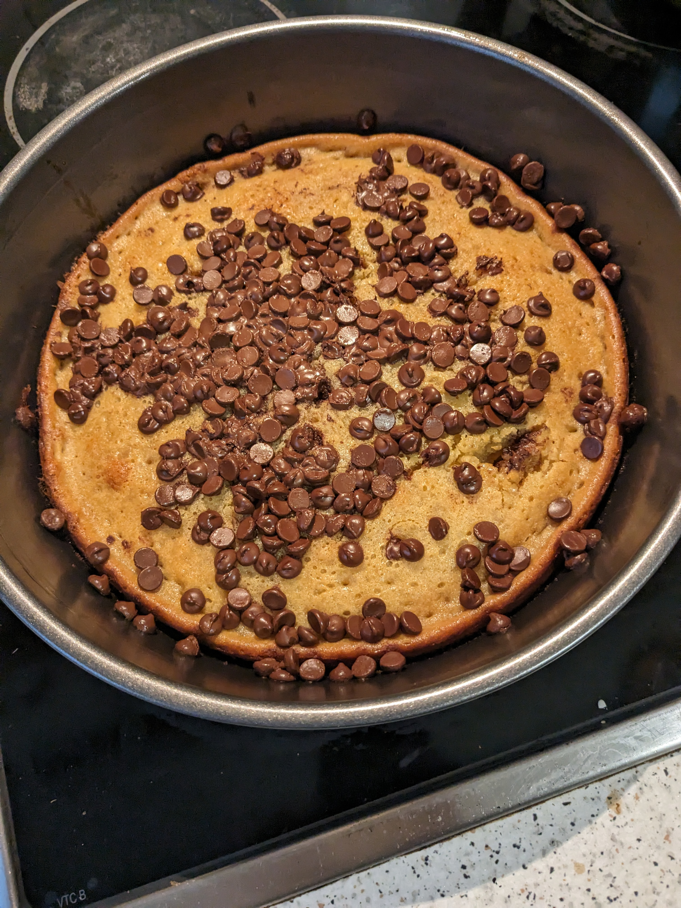

Alex's Birthday Cake! (Vanillia Bizcocho)

Description
I made this vanilla cake, known as Bizcocho in Spanish, with chocolate chips for Alex since it was her birthday. It is simple, but delicious!
The recipe found here is one (in Spanish) that I modified.
Ingredients
- 250 g. de harina de trigo todo uso (tamizada)
- 100 g. de azúcar blanca
- 3 huevos tamaño L
- 140 g. de aceite de girasol (puedes usar un aceite de oliva suave)
- 160 ml. de leche a temperatura ambiente
- 15 g. de levadura química o polvo de hornear tipo royal
- 4 cucharadas soperas de extracto de vainilla
- Pepitas de chocolate
Make sure to bake the cake for 20 minutes at 220 degrees celsius.
Steps
Cooking instructions will be added in the future.
Back to Odin Recipes